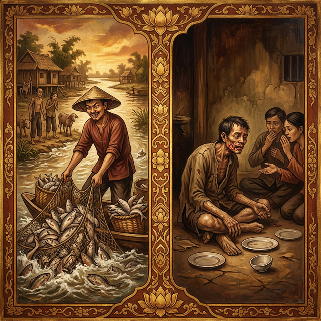
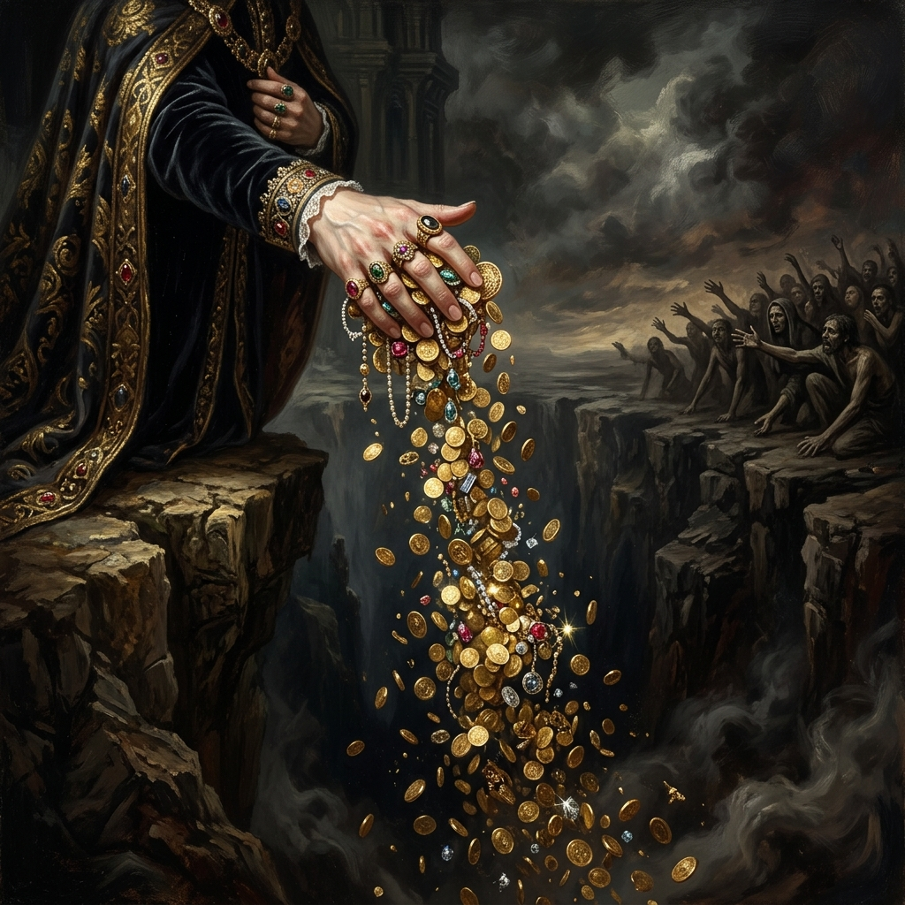
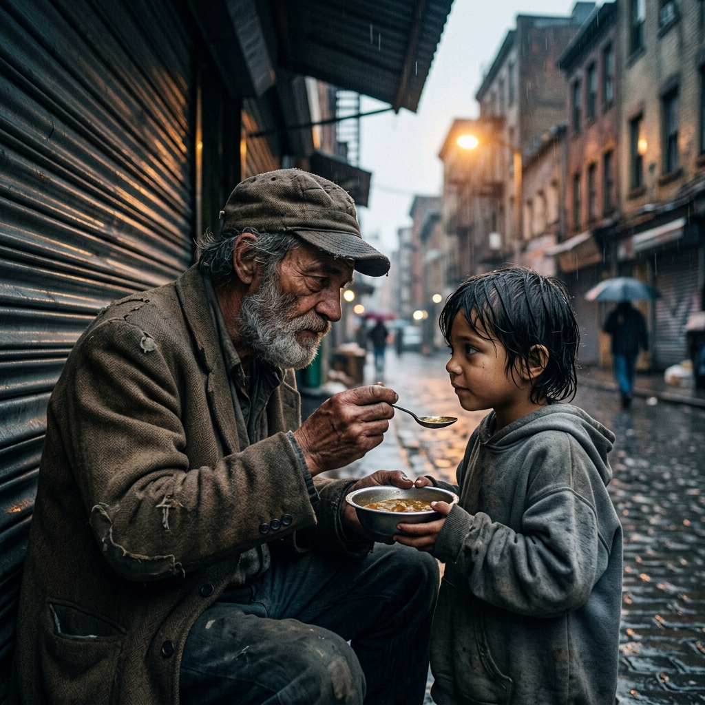
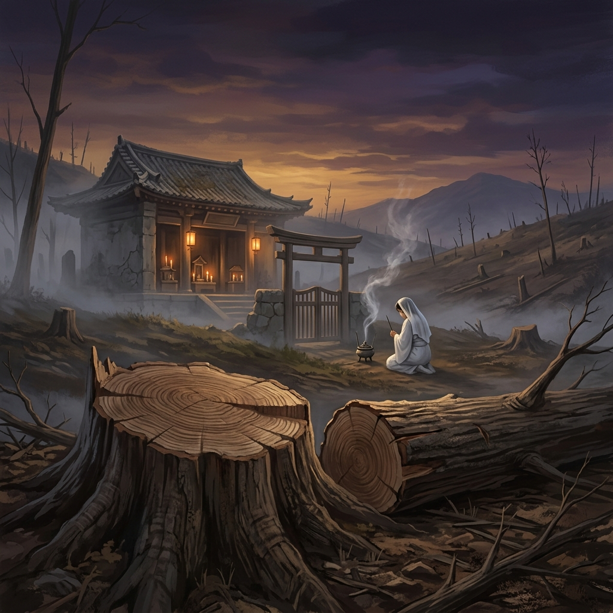
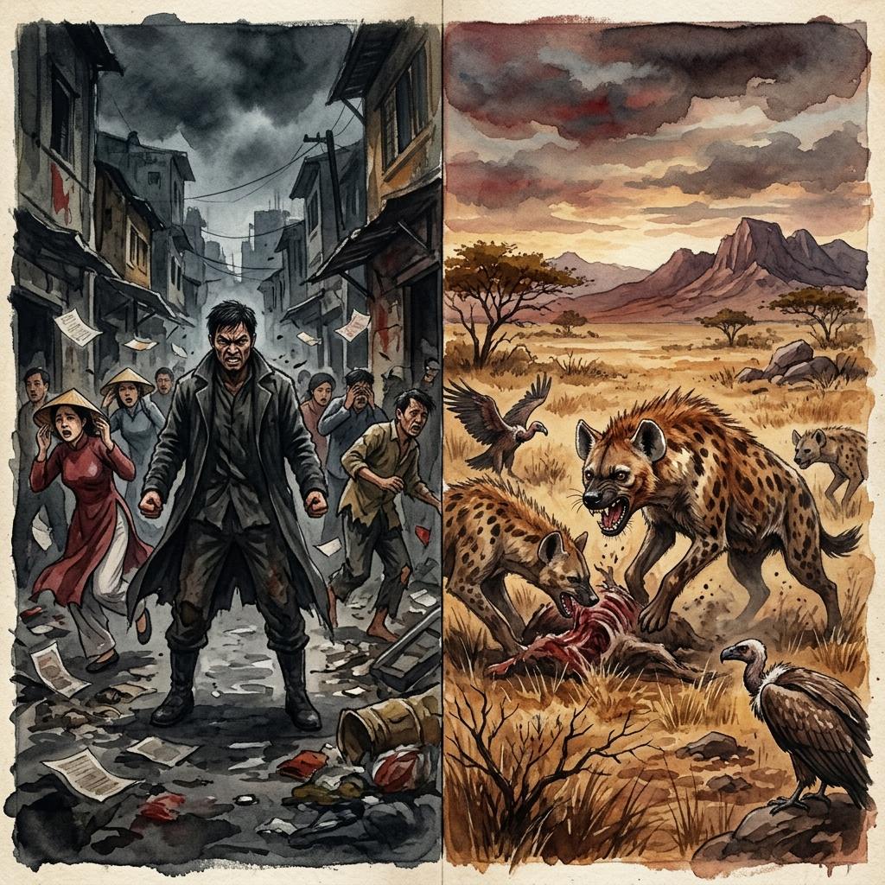
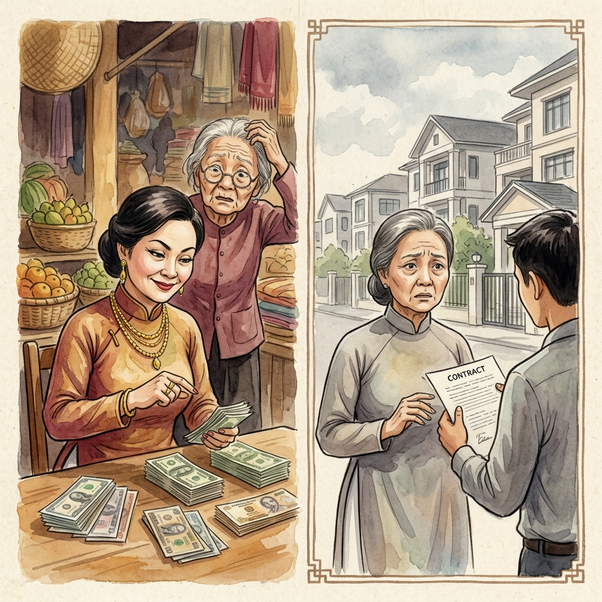
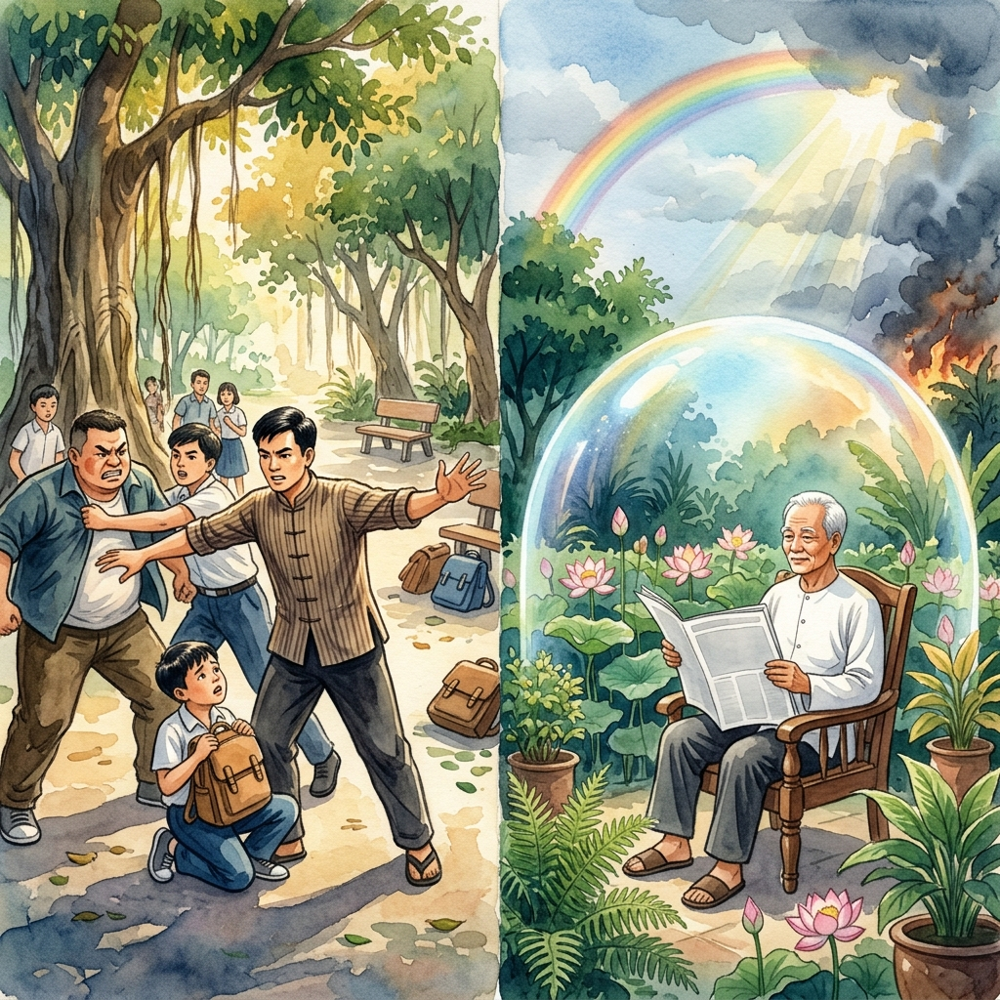
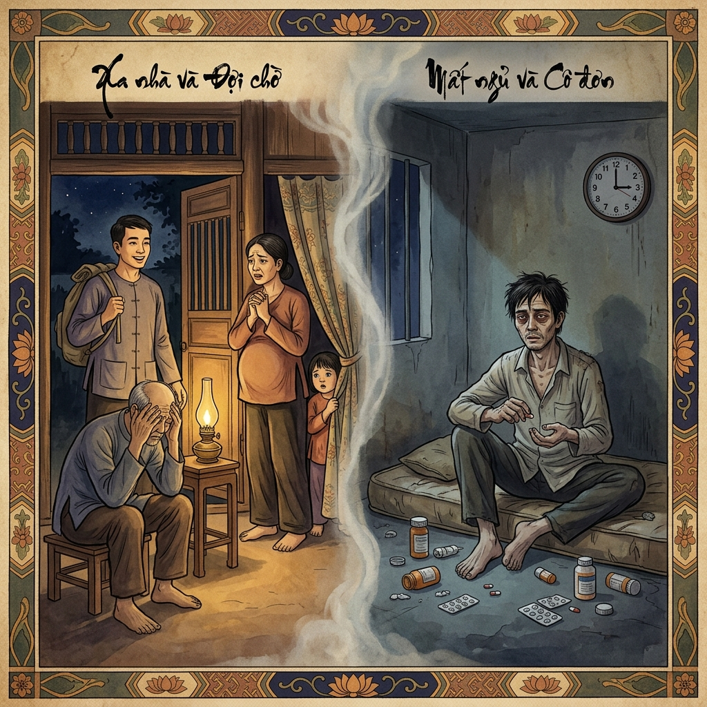
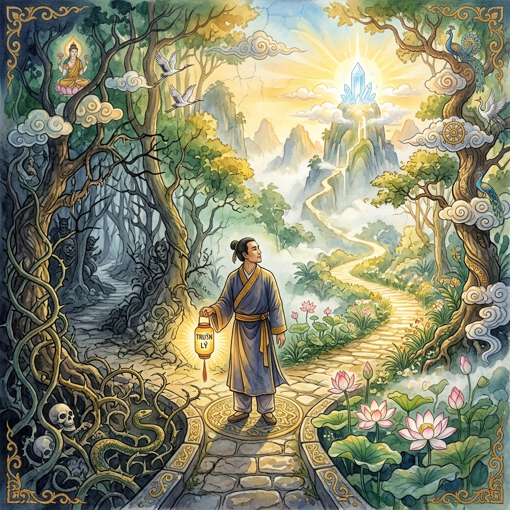
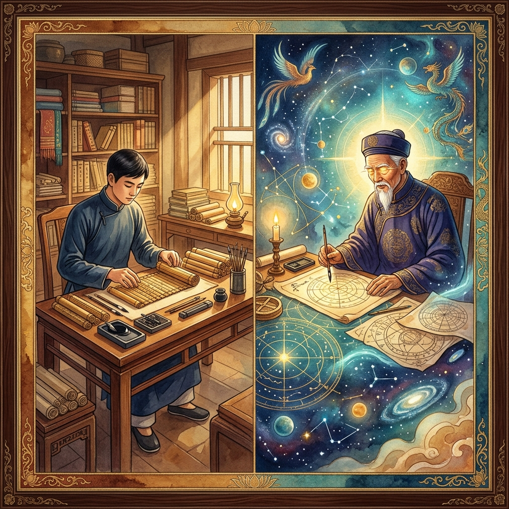

Biblioteca del KarmaKarma LibraryBiblioteca del Karma业力图书馆مكتبة الكرمةБиблиотека КармыKarma-BibliothekBibliothèque Karmaカルマ ライブラリーBiblioteca do CarmaThư viện nghiệp chướng

CAPÍTULO 0CHAPTER
0CAPITOLO 0第0章الفصل 0ГЛАВА 0KAPITEL
0CHAPITRE 0第0章CAPÍTULO 0CHƯƠNG 0
El DespertarThe AwakeningIl Risveglio觉醒الصحوةПробуждениеDas ErwachenL'Éveil目覚めO DespertarSự thức tỉnh

CAPÍTULO ICHAPTER
ICAPITOLO I第I章الفصل IГЛАВА IKAPITEL
ICHAPITRE I第I章CAPÍTULO ICHƯƠNG I
Fuerza FísicaPhysical StrengthForza Fisica体力القوة البدنيةФизическая силаPhysische KraftForce Physique体力Força FísicaSức mạnh thể chất

CAPÍTULO IICHAPTER
IICAPITOLO II第II章الفصل IIГЛАВА IIKAPITEL
IICHAPITRE II第II章CAPÍTULO IICHƯƠNG II
Espejos RotosBroken MirrorsSpecchi Rotti破镜مرايا مكسورةРазбитые зеркалаZerbrochene SpiegelMiroirs Brisés割れた鏡Espelhos QuebradosGương vỡ

CAPÍTULO IIICHAPTER
IIICAPITOLO III第III章الفصل IIIГЛАВА IIIKAPITEL
IIICHAPITRE III第III章CAPÍTULO IIICHƯƠNG III
Siembra SilenciosaSilent SowingSemina Silenziosa默默播种بذر صامتТихий посевStilles SäenSemis Silencieux静かな種まきSemeadeira SilenciosaGieo thầm lặng

CAPÍTULO IVCHAPTER
IVCAPITOLO IV第IV章الفصل IVГЛАВА IVKAPITEL
IVCHAPITRE IV第IV章CAPÍTULO IVCHƯƠNG IV
Hilo de la VidaThread of LifeFilo della Vita生命之线خيط الحياةНить жизниFaden des LebensFil de la Vie命の糸Fio da VidaChủ đề cuộc sống

CAPÍTULO VCHAPTER
VCAPITOLO V第V章الفصل VГЛАВА VKAPITEL
VCHAPITRE V第V章CAPÍTULO VCHƯƠNG V
Sombras MentalesMental ShadowsOmbre Mentali心理阴影ظلال عقليةМентальные тениMentale SchattenOmbres Mentales精神の影Sombras MentaisBóng tối tinh thần

CAPÍTULO VICHAPTER
VICAPITOLO VI第VI章الفصل VIГЛАВА VIKAPITEL
VICHAPITRE VI第VI章CAPÍTULO VICHƯƠNG VI
Veneno DulceSweet PoisonDolce Veleno甜蜜的毒药ثعبان الروحСладкий ядSüßes GiftDoux Poison甘い毒Veneno DoceChất độc ngọt ngào

CAPÍTULO VIICHAPTER
VIICAPITOLO VII第VII章الفصل VIIГЛАВА VIIKAPITEL
VIICHAPITRE VII第VII章CAPÍTULO VIICHƯƠNG VII
Manos del MalHands of EvilMani del Male邪恶之手أيدي الشرРуки злаHände des BösenMains du Mal悪の手Mãos do MalBàn tay của ác quỷ

CAPÍTULO VIIICHAPTER
VIIICAPITOLO VIII第VIII章الفصل VIIIГЛАВА VIIIKAPITEL
VIIICHAPITRE VIII第VIII章CAPÍTULO VIIICHƯƠNG VIII
SoberbiaPrideSuperbia傲慢كبرياءГордыняHochmutOrgueil傲慢SoberbaKiêu hãnh

CAPÍTULO IXCHAPTER
IXCAPITOLO IX第IX章الفصل IXГЛАВА IXKAPITEL
IXCHAPITRE IX第IX章CAPÍTULO IXCHƯƠNG IX
EgoísmoGreedEgoismo自私أنانيةЭгоизмEgoismusÉgoïsme利己主義Egoísmo Sự ích kỷ

CAPÍTULO XCHAPTER
XCAPITOLO X第X章الفصل XГЛАВА XKAPITEL
XCHAPITRE X第X章CAPÍTULO XCHƯƠNG X
InfiernoHellInferno地狱جحيمАдHölleEnfer地獄InfernoĐịa ngục

CAPÍTULO XICHAPTER
XICAPITOLO XI第XI章الفصل XIГЛАВА XIKAPITEL
XICHAPITRE XI第XI章CAPÍTULO XICHƯƠNG XI
DesprecioContemptDisprezzo蔑视احتقارПрезрениеVerachtungMépris軽蔑Desprezo Khinh thường

CAPÍTULO XIICHAPTER
XIICAPITOLO XII第XII章الفصل XIIГЛАВА XIIKAPITEL
XIICHAPITRE XII第XII章CAPÍTULO XIICHƯƠNG XII
InjusticiaInjusticeIngiustizia不公ظلمНесправедливостьUngerechtigkeitInjustice不正Injustiça sự bất công

CAPÍTULO XIIICHAPTER XIIICAPITOLO XIII第XIII章الفصل
XIIIГЛАВА XIIIKAPITEL
XIIICHAPITRE XIII第XIII章CAPÍTULO XIII
CHƯƠNG XIII
El Rostro del AmorThe Face of LoveIl volto dell'amore爱的面容وجه الحبЛицо любвиDas Gesicht der LiebeLe visage de l'amour愛の顔A Face do Amor Khuôn mặt của tình yêu

CAPÍTULO XIVCHAPTER XIVCAPITOLO XIV第XIV章الفصل
XIVГЛАВА XIVKAPITEL XIVCHAPITRE XIV第XIV章CAPÍTULO
XIV
CHƯƠNG XIV
La Deuda InvisibleThe Invisible DebtIl debito invisibile隐形债务الديون غير المرئيةНевидимый долгDie unsichtbare SchuldLa dette invisible見えない借金A dívida invisívelNợ vô hình

CAPÍTULO XVCHAPTER XVCAPITOLO XV第XV章الفصل
XVГЛАВА XVKAPITEL XVCHAPITRE XV第XV章CAPÍTULO
XV
CHƯƠNG XV
El Plato VacíoThe Empty PlateIl piatto vuoto空盘子اللوحة الفارغةПустая тарелкаDer leere TellerL'assiette vide空の皿O Prato VazioChiếc đĩa trống

CAPÍTULO XVICHAPTER XVICAPITOLO XVI第XVI章الفصل
XVIГЛАВА XVIKAPITEL XVICHAPITRE XVI第XVI章CAPÍTULO
XVI
CHƯƠNG XVI
La Ceguera AutoimpuestaSelf-Imposed BlindnessCecità autoimposta自我失明العمى المفروض ذاتياДобровольная слепотаSelbst auferlegte BlindheitCécité auto-imposée自ら選んだ失明Cegueira autoimpostaMù quáng tự chuốc lấy

CAPÍTULO XVIICHAPTER XVIICAPITOLO XVII第XVII章الفصل
XVIIГЛАВА XVIIKAPITEL
XVIICHAPITRE XVII第XVII章CAPÍTULO XVII
CHƯƠNG XVII
El Cordón CortadoThe Cut CordIl cordone tagliato被割断的绳子الحبل المقطوعРазрезанный шнурDie durchtrennte SchnurLe cordon coupéカットされたコードO cordão cortadoSợi dây bị cắt đứt

CAPÍTULO XVIIICHAPTER XVIIICAPITOLO XVIII第XVIII章الفصل
XVIIIГЛАВА XVIIIKAPITEL
XVIIICHAPITRE XVIII第XVIII章CAPÍTULO XVIII
CHƯƠNG XVIII
El Peso de la IndolenciaThe Weight of IndolenceIl peso dell'indolenza懒惰的重量وزن الكسلТяжесть праздностиDas Gewicht der TrägheitLe poids de l'indolence怠惰の重みO peso da indolênciaSức nặng của sự lười biếng

CAPÍTULO XIXCHAPTER XIXCAPITOLO XIX第XIX章الفصل XIXГЛАВА XIXKAPITEL XIXCHAPITRE XIX第XIX章CAPÍTULO XIXCHƯƠNG XIX
La Senda DestruidaThe Destroyed PathIl Sentiero Distrutto被毁的道路الطريق المدمرРазрушенный путьDer Zerstörte PfadLe Sentier Détruit破壊された道A Senda DestruídaCon Đường Bị Phá Hủy

CAPÍTULO XXCHAPTER XXCAPITOLO XX第XX章الفصل XXГЛАВА XXKAPITEL XXCHAPITRE XX第XX章CAPÍTULO XXCHƯƠNG XX
El Puente de la ProsperidadThe Bridge of ProsperityIl Ponte della Prosperità繁荣之桥جسر الازدهارМост процветанияDie Brücke des WohlstandsLe Pont de la Prospérité繁栄の橋A Ponte da ProsperidadeCây Cầu Thịnh Vượng

CAPÍTULO XXICHAPTER XXICAPITOLO XXI第XXI章الفصل XXIГЛАВА XXIKAPITEL XXICHAPITRE XXI第XXI章CAPÍTULO XXICHƯƠNG XXI
El Fuego del ExhibicionismoThe Fire of ExhibitionismIl Fuoco dell\裸露之火نار الاستعراضОгонь эксгибиционизмаDas Feuer des ExhibitionismusLe Feu de l\露出の炎O Fogo do ExibicionismoNgọn Lửa Phô Bày

CAPÍTULO XXIICHAPTER XXIICAPITOLO XXII第XXII章الفصل XXIIГЛАВА XXIIKAPITEL XXIICHAPITRE XXII第XXII章CAPÍTULO XXIICHƯƠNG XXII
La Red VacíaThe Empty NetLa Rete Vuota空网الشبكة الفارغةПустая сетьDas Leere NetzLe Filet Vide空の網A Rede VaziaLưới Trống

CAPÍTULO XXIIICHAPTER XXIIICAPITOLO XXIII第XXIII章الفصل XXIIIГЛАВА XXIIIKAPITEL XXIIICHAPITRE XXIII第XXIII章CAPÍTULO XXIIICHƯƠNG XXIII
Los Dados del VacíoThe Dice of the VoidI dadi del vuoto虚空之骰نرد الفراغКости пустотыDie Würfel der LeereLes Dés du Vide虚無のサイコロOs Dados do VazioXúc Xắc Hư Không

CAPÍTULO XXIVCHAPTER XXIVCAPITOLO XXIV第XXIV章الفصل XXIVГЛАВА XXIVKAPITEL XXIVCHAPITRE XXIV第XXIV章CAPÍTULO XXIVCHƯƠNG XXIV
La Riqueza de HumoThe Smoke WealthLa ricchezza di fumo烟雾之财ثروة الدخانДымное богатствоDer RauchreichtumLa Richesse de Fumée煙の富A Riqueza de FumaçaSự Giàu Có Khói Bụi

CAPÍTULO XXVCHAPTER XXVCAPITOLO XXV第XXV章الفصل XXVГЛАВА XXVKAPITEL XXVCHAPITRE XXV第XXV章CAPÍTULO XXVCHƯƠNG XXV
La Firmeza ante el MalFirmness against EvilFermezza contro il Male对恶的坚定الحزم في مواجهة الشرТвёрдость перед зломStandhaftigkeit gegen das BöseLa fermeté face au mal悪に対する毅然とした態度Firmeza contra o MalSự cứng rắn trước cái ác

CAPÍTULO XXVICHAPTER XXVICAPITOLO XXVI第XXVI章الفصل XXVIГЛАВА XXVIKAPITEL XXVICHAPITRE XXVI第XXVI章CAPÍTULO XXVICHƯƠNG XXVI
La Responsabilidad por el Bien NacionalResponsibility for the National GoodLa Responsabilità per il Bene Nazionale对国家利益的责任المسؤولية عن الخير الوطنيОтветственность за национальное благоVerantwortung für das nationale WohlLa responsabilité du bien national国家の利益に対する責任A Responsabilidade pelo Bem NacionalTrách nhiệm với lợi ích quốc gia
CAPÍTULO XXVIICHAPTER XXVIICAPITOLO XXVII第二十七章الفصل السابع والعشرونГЛАВА XXVIIKAPITEL XXVIICHAPITRE XXVII第27章CAPÍTULO XXVIICHƯƠNG XXVII
La Generosidad del ConocimientoThe Generosity of KnowledgeLa Generosità della Conoscenza知识的慷慨سخاء المعرفةЩедрость знанийDie Großzügigkeit des WissensLa générosité du savoir知識の寛大さA Generosidade do ConhecimentoSự Hào Phóng Của Tri Thức

CAPÍTULO XXVIIICHAPTER XXVIIICAPITOLO XXVIII第二十八章الفصل الثامن والعشرونГЛАВА XXVIIIKAPITEL XXVIIICHAPITRE XXVIII第28章CAPÍTULO XXVIIICHƯƠNG XXVIII
El Precio de Reprimir el TalentoThe Price of Suppressing TalentIl Prezzo di Reprimere il Talento压制人才的代价ثمن قمع الموهبةЦена подавления талантаDer Preis für die Unterdrückung von TalentenLe prix de la répression du talent才能を抑圧する代償O Preço de Reprimir o TalentoCái Giá Của Việc Trù Dập Người Tài
CAPÍTULO XXIXCHAPTER XXIXCAPITOLO XXIX第二十九章الفصل التاسع والعشرونГЛАВА XXIXKAPITEL XXIXCHAPITRE XXIX第29章CAPÍTULO XXIXCHƯƠNG XXIX
La Cosecha de la CompasiónThe Harvest of CompassionIl Raccolto della Compassione同情心的收获حصاد الرحمةЖатва состраданияDie Ernte des MitgefühlsLa moisson de la compassion慈悲の収穫A Colheita da CompaixãoSự Thu Hoạch Của Lòng Từ Bi

CAPÍTULO XXXCHAPTER XXXCAPITOLO XXX第三十章الفصل الثلاثونГЛАВА XXXKAPITEL XXXCHAPITRE XXX第30章CAPÍTULO XXXCHƯƠNG XXX
Dar desde la EscasezGiving from ScarcityDare dalla Scarsità在匮乏中奉献العطاء من العوزДаяние в нуждеGeben aus dem MangelDonner depuis la pénurie欠乏の中での施しDar a partir da EscassezSẻ Chia Trong Nghèo Khó
CAPÍTULO XXXICHAPTER XXXICAPITOLO XXXI第三十一章الفصل الحادي والثلاثونГЛАВА XXXIKAPITEL XXXICHAPITRE XXXI第31章CAPÍTULO XXXICHƯƠNG XXXI
El Veneno del ConsentimientoThe Poison of IndulgenceIl Veleno dell'Indulgenza放纵的毒药سم التدليلЯд изнеженностиDas Gift der NachgiebigkeitLe poison de l'indulgence甘やかし...O Veneno do ConsentimentoĐộc Tố Của Sự Nuông Chiều
CAPÍTULO XXXIICHAPTER XXXIICAPITOLO XXXII第三十二章الفصل الثاني والثلاثونГЛАВА XXXIIKAPITEL XXXIICHAPITRE XXXII第32章CAPÍTULO XXXIICHƯƠNG XXXII
Cimentar la SabiduríaFoundation of WisdomFondamenta della Sapienza智慧的基石تأسيس الحكمةФундамент мудростиFundament der WeisheitFondation de la sagesse知恵の基盤Cimentar a SabedoriaGieo Mầm Trí Tuệ
CAPÍTULO XXXIIICHAPTER XXXIIICAPITOLO XXXIII第三十三章الفصل الثالث والثلاثونГЛАВА XXXIIIKAPITEL XXXIIICHAPITRE XXXIII第33章CAPÍTULO XXXIIICHƯƠNG XXXIII
La Santidad del RefugioSanctity of RefugeSantità del Rifugio避难所的神圣قدسية المأوىСвятость кроваHeiligkeit der ZufluchtSainteté du refuge避難所の神聖さSantidade do RefúgioTôn Trọng Mái Ấm

CAPÍTULO XXXIVCHAPTER XXXIVCAPITOLO XXXIV第三十四章الفصل الرابع والثلاثونГЛАВА XXXIVKAPITEL XXXIVCHAPITRE XXXIV第34章CAPÍTULO XXXIVCHƯƠNG XXXIV
La Luz que Guía a OtrosThe Light that Guides OthersLa Luce che Guida gli Altri引导他人的光النور الذي يهدي الآخرينСвет, направляющий другихDas Licht, das andere führtLa lumière qui guide les autres他者を導く光A Luz que Guia os OutrosÁnh Sáng Khai Tâm
CAPÍTULO XXXVCHAPTER XXXVCAPITOLO XXXV第三十五章الفصل الخامس والثلاثونГЛАВА XXXVKAPITEL XXXVCHAPITRE XXXV第35章CAPÍTULO XXXVCHƯƠNG XXXV
El Refugio de la CompasiónThe Shelter of CompassionIl Rifugio della Compassione慈悲的庇护所ملاذ الرحمةПриют состраданияDie Zuflucht des MitgefühlsLe refuge de la compassion慈悲の避難所O Refúgio da CompaixãoNơi Trú Ẩn Của Lòng Từ Bi

CAPÍTULO XXXVICHAPTER XXXVICAPITOLO XXXVI第三十六章الفصل السادس والثلاثونГЛАВА XXXVIKAPITEL XXXVICHAPITRE XXXVI第36章CAPÍTULO XXXVICHƯƠNG XXXVI
El Fruto Amargo de la AvariciaThe Bitter Fruit of GreedIl Frutto Amaro dell'Avarizia贪婪的苦果ثمار الطمع المرةГорький плод алчностиDie bittere Frucht der GierLe fruit amer de l'avarice貪欲の苦い果実O Fruto Amargo da AvariceQuả Đắng Của Lòng Tham

CAPÍTULO XXXVIICHAPTER XXXVIICAPITOLO XXXVII第三十七章الفصل السابع والثلاثونГЛАВА XXXVIIKAPITEL XXXVIICHAPITRE XXXVII第37章CAPÍTULO XXXVIICHƯƠNG XXXVII
El Aliento de la VidaThe Breath of LifeIl Respiro della Vita生命的气息نَفَسُ الحياةДыхание жизниDer Atem des LebensLe Souffle de la Vie命の息吹O Sopro da VidaHơi Thở Của Sự Sống
CAPÍTULO XXXVIIICHAPTER XXXVIIICAPITOLO XXXVIII第三十八章الفصل الثامن والثلاثونГЛАВА XXXVIIIKAPITEL XXXVIIICHAPITRE XXXVIII第38章CAPÍTULO XXXVIIICHƯƠNG XXXVIII
El Eco del Triunfo AjenoThe Echo of Others' TriumphL'Eco del Trionfo Altrui他人胜利的回响صدى نجاح الآخرينЭхо чужого триумфаDas Echo des fremden TriumphesL'Écho du Triomphe d'Autrui他者の勝利の残響O Eco do Triunfo AlheioTiếng Vang Của Thành Công Người Khác

CAPÍTULO XXXIXCHAPTER XXXIXCAPITOLO XXXIX第三十九章الفصل التاسع والثلاثونГЛАВА XXXIXKAPITEL XXXIXCHAPITRE XXXIX第39章CAPÍTULO XXXIXCHƯƠNG XXXIX
La Alquimia de la AbundanciaThe Alchemy of AbundanceL'Alchimia dell'Abbondanza丰饶的炼金术خيمياء الوفرةАлхимия изобилияDie Alchemie des ÜberflussesL'Alchimie de l'Abondance豊かさの錬金術A Alquimia da AbundânciaGiả Kim Thuật Của Sự Thịnh Vượng
CAPÍTULO XLCHAPTER XLCAPITOLO XL第四十章الفصل الأربعونГЛАВА XLKAPITEL XLCHAPITRE XL第40章CAPÍTULO XLCHƯƠNG XL
La Cosecha de los HijosThe Harvest of ChildrenIl Raccolto dei Figli子孙的收获حصاد الأبناءУрожай детейDie Ernte der KinderLa Récolte des Enfants子孫の収穫A Colheita dos FilhosMùa Gặt Của Con Cháu
CAPÍTULO XLICHAPTER XLICAPITOLO XLI第四十一章الفصل الحادي والأربعونГЛАВА XLIKAPITEL XLICHAPITRE XLI第41章CAPÍTULO XLICHƯƠNG XLI
La Sed del Alma PródigaThe Thirst of the Prodigal SoulLa Sete dell'Anima Prodiga挥霍灵魂的干渴عطش الروح المبذّرةЖажда расточительной душиDer Durst der verschwenderischen SeeleLa Soif de l'Âme Prodigue浪費する魂の渇きA Sede da Alma PródigaCơn Khát Của Linh Hồn Phung Phí

CAPÍTULO XLIICHAPTER XLIICAPITOLO XLII第四十二章الفصل الثاني والأربعونГЛАВА XLIIKAPITEL XLIICHAPITRE XLII第42章CAPÍTULO XLIICHƯƠNG XLII
La Oscuridad que se HeredaThe Darkness that is InheritedL'Oscurità che si Eredita继承的黑暗الظلام الموروثТьма, которую наследуютDie Dunkelheit, die man erbtL'Obscurité que l'on Hérite受け継がれる闇A Escuridão que se HerdaBóng Tối Được Thừa Kế

CAPÍTULO XLIIICHAPTER XLIIICAPITOLO XLIII第四十三章الفصل الثالث والأربعونГЛАВА XLIIIKAPITEL XLIIICHAPITRE XLIII第43章CAPÍTULO XLIIICHƯƠNG XLIII
El Obrero del DestinoThe Laborer of DestinyL'Operaio del Destino命运的工匠عامل القدرТруженик судьбыDer Arbeiter des SchicksalsL'Ouvrier du Destin運命の職人O Obreiro do DestinoNgười Thợ Của Số Phận

CAPÍTULO XLIVCHAPTER XLIVCAPITOLO XLIV第四十四章الفصل الرابع والأربعونГЛАВА XLIVKAPITEL XLIVCHAPITRE XLIV第44章CAPÍTULO XLIVCHƯƠNG XLIV
Los Anillos de la MuerteThe Rings of DeathGli Anelli della Morte死亡之年轮حلقات الموتКольца смертиDie Ringe des TodesLes Anneaux de la Mort死の年輪Os Anéis da MorteNhững Vòng Năm Của Cái Chết
CAPÍTULO XLVCHAPTER XLVCAPITOLO XLV第四十五章الفصل الخامس والأربعونГЛАВА XLVKAPITEL XLVCHAPITRE XLV第45章CAPÍTULO XLVCHƯƠNG XLV
El Juez que fue JuzgadoThe Judge Who Was JudgedIl Giudice Giudicato被审判的审判者القاضي الذي حُكم عليهСудья, которого судилиDer Richter, der gerichtet wurdeLe Juge qui fut Jugé裁かれた審判者O Juiz que foi JulgadoVị Giám Khảo Bị Phán Xét

CAPÍTULO XLVICHAPTER XLVICAPITOLO XLVI第四十六章الفصل السادس والأربعونГЛАВА XLVIKAPITEL XLVICHAPITRE XLVI第46章CAPÍTULO XLVICHƯƠNG XLVI
El Sembrador de ConcienciasThe Sower of ConsciencesIl Seminatore di Coscienze良知的播种者زارع الضمائرСеятель совестиDer Säer des GewissensLe Semeur de Consciences良心の種蒔き人O Semeador de ConsciênciasNgười Gieo Lương Tri

CAPÍTULO XLVIICHAPTER XLVIICAPITOLO XLVII第四十七章الفصل السابع والأربعونГЛАВА XLVIIKAPITEL XLVIICHAPITRE XLVII第47章CAPÍTULO XLVIICHƯƠNG XLVII
La Fama que Nadie BuscóThe Fame No One SoughtLa Fama che Nessuno Cercò无人追逐的声名الشهرة التي لم يسعَ إليها أحدСлава, которой никто не искалDer Ruhm, den niemand suchteLa Gloire que Personne ne Chercha誰も求めなかった名声A Fama que Ninguém ProcurouDanh Tiếng Không Ai Tìm Kiếm

CAPÍTULO XLVIIICHAPTER XLVIIICAPITOLO XLVIII第四十八章الفصل الثامن والأربعونГЛАВА XLVIIIKAPITEL XLVIIICHAPITRE XLVIII第48章CAPÍTULO XLVIIICHƯƠNG XLVIII
El Río que RecuerdaThe River that RemembersIl Fiume che Ricorda记忆之河النهر الذي يتذكرРека, которая помнитDer Fluss, der sich erinnertLe Fleuve qui se Souvient記憶する川O Rio que RecordaDòng Sông Nhớ Mãi

CAPÍTULO XLIXCHAPTER XLIXCAPITOLO XLIX第四十九章الفصل التاسع والأربعونГЛАВА XLIXKAPITEL XLIXCHAPITRE XLIX第49章CAPÍTULO XLIXCHƯƠNG XLIX
La Escoba y la CosechaThe Broom and the HarvestLa Scopa e il Raccolto扫帚与收获المكنسة والحصادМетла и жатваDer Besen und die ErnteLe Balai et la Récolte箒と収穫A Vassoura e a ColheitaCây Chổi và Mùa Gặt

CAPÍTULO LCHAPTER LCAPITOLO L第五十章الفصل الخمسونГЛАВА LKAPITEL LCHAPITRE L第50章CAPÍTULO LCHƯƠNG L
El Exilio de la EspecieThe Exile from the SpeciesL'Esilio dalla Specie物种的放逐النفي من الجنس البشريИзгнание из родаDie Verbannung aus der ArtL'Exil de l'Espèce種からの追放O Exílio da EspécieLưu Đày Khỏi Loài Người

CAPÍTULO LICHAPTER LICAPITOLO LI第五十一章الفصل الحادي والخمسونГЛАВА LIKAPITEL LICHAPITRE LI第51章CAPÍTULO LICHƯƠNG LI
La Telaraña DoradaThe Golden WebLa Ragnatela d'Oro金色蛛网شبكة العنكبوت الذهبيةЗолотая паутинаDas Goldene NetzLa Toile d'Or黄金の蜘蛛の巣A Teia DouradaMạng Nhện Vàng

CAPÍTULO LIICHAPTER LIICAPITOLO LII第五十二章الفصل الثاني والخمسونГЛАВА LIIKAPITEL LIICHAPITRE LII第52章CAPÍTULO LIICHƯƠNG LII
El Escudo InvisibleThe Invisible ShieldLo Scudo Invisibile无形的盾الدرع الخفيНевидимый щитDer Unsichtbare SchildLe Bouclier Invisible見えない盾O Escudo InvisívelLá Chắn Vô Hình

CAPÍTULO LIIICHAPTER LIIICAPITOLO LIII第五十三章الفصل الثالث والخمسونГЛАВА LIIIKAPITEL LIIICHAPITRE LIII第53章CAPÍTULO LIIICHƯƠNG LIII
El Reloj de Arena VacíoThe Empty HourglassLa Clessidra Vuota空空的沙漏الساعة الرملية الفارغةПустые песочные часыDie Leere SanduhrLe Sablier Vide空の砂時計A Ampulheta VaziaĐồng Hồ Cát Rỗng

CAPÍTULO LIVCHAPTER LIVCAPITOLO LIV第五十四章الفصل الرابع والخمسونГЛАВА LIVKAPITEL LIVCHAPITRE LIV第54章CAPÍTULO LIVCHƯƠNG LIV
Las Noches sin LunaThe Moonless NightsLe Notti senza Luna无月之夜الليالي بلا قمرБезлунные ночиDie Mondlosen NächteLes Nuits sans Lune月のない夜As Noites sem LuaNhững Đêm Không Trăng

CAPÍTULO LVCHAPTER LVCAPITOLO LV第五十五章الفصل الخامس والخمسونГЛАВА LVKAPITEL LVCHAPITRE LV第55章CAPÍTULO LVCHƯƠNG LV
El Oro que No AlimentaThe Gold That Does Not NourishL'Oro che Non Nutre不能果腹的黄金الذهب الذي لا يُشبعЗолото, которое не кормитDas Gold, das Nicht NährtL'Or qui Ne Nourrit Pas満たされぬ黄金O Ouro que Não AlimentaVàng Mà Không No

CAPÍTULO LVICHAPTER LVICAPITOLO LVI第五十六章الفصل السادس والخمسونГЛАВА LVIKAPITEL LVICHAPITRE LVI第56章CAPÍTULO LVICHƯƠNG LVI
La Tinta que No EscribeThe Ink That Won't WriteL'Inchiostro che Non Scrive无法落笔的墨水الحبر الذي لا يكتبЧернила, которые не пишутDie Tinte, die Nicht SchreibtL'Encre qui N'Écrit Pas書けぬ墨A Tinta que Não EscreveNét Mực Không Thành

CAPÍTULO LVIICHAPTER LVIICAPITOLO LVII第五十七章الفصل السابع والخمسونГЛАВА LVIIKAPITEL LVIICHAPITRE LVII第57章CAPÍTULO LVIICHƯƠNG LVII
El Velo de la IndiferenciaThe Veil of IndifferenceIl Velo dell'Indifferenza冷漠之帷حجاب اللامبالاةЗавеса безразличияDer Schleier der GleichgültigkeitLe Voile de l'Indifférence無関心のベールO Véu da IndiferençaBức Màn Vô Cảm

CAPÍTULO LVIIICHAPTER LVIIICAPITOLO LVIII第五十八章الفصل الثامن والخمسونГЛАВА LVIIIKAPITEL LVIIICHAPITRE LVIII第58章CAPÍTULO LVIIICHƯƠNG LVIII
La Prosperidad sin EspírituProsperity without SpiritProsperità senza Spirito缺乏灵性的繁荣الازدهار بدون روحПроцветание без духаWohlstand ohne GeistLa Prospérité sans Esprit精神なき繁栄A Prosperidade sem EspíritoSự Thịnh Vượng Thiếu Linh Hồn

CAPÍTULO LIXCHAPTER LIXCAPITOLO LIX第五十九章الفصل التاسع والخمسونГЛАВА LIXKAPITEL LIXCHAPITRE LIX第59章CAPÍTULO LIXCHƯƠNG LIX
La Transparencia del AlmaThe Transparency of the SoulLa Trasparenza dell'Anima灵魂的透明度شفافية الروحПрозрачность душиDie Transparenz der SeeleLa Transparence de l'Âme魂の透明性A Transparência da AlmaSự Trong Suốt Của Tâm Hồn

CAPÍTULO LXCHAPTER LXCAPITOLO LX第六十章الفصل الستونГЛАВА LXKAPITEL LXCHAPITRE LX第60章CAPÍTULO LXCHƯƠNG LX
El Arte de la Precisión MentalThe Art of Mental PrecisionL'Arte della Precisione Mentale心理精密度的艺术فن الدقة العقليةИскусство ментальной точностиDie Kunst der mentalen PräzisionL'Art de la Précision Mentale精神的精度の芸術A Arte da Precisão MentalNghệ Thuật Của Sự Tinh Tế

CAPÍTULO LXICHAPTER LXICAPITOLO LXI第六十一章الفصل الحادي والستونГЛАВА LXIKAPITEL LXICHAPITRE LXI第61章CAPÍTULO LXICHƯƠNG LXI